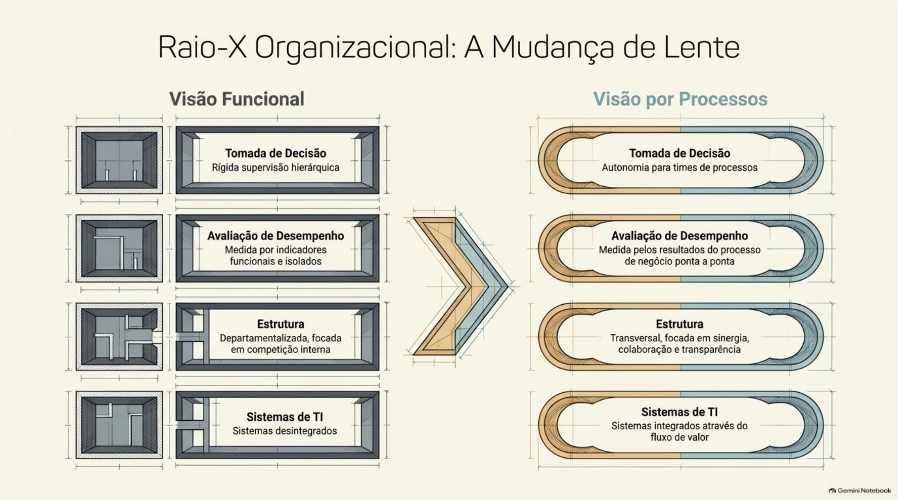
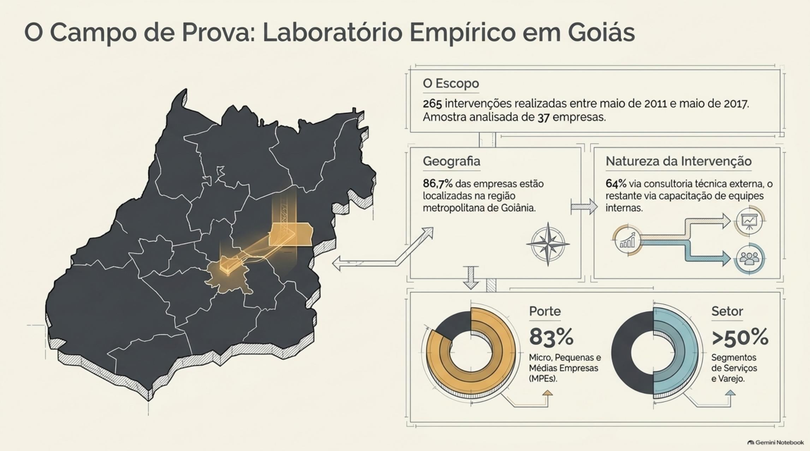
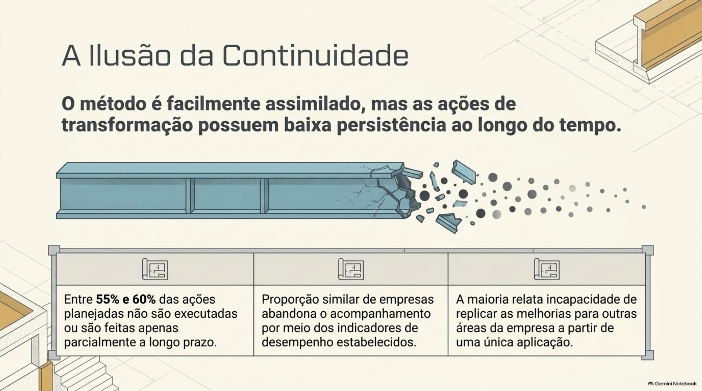
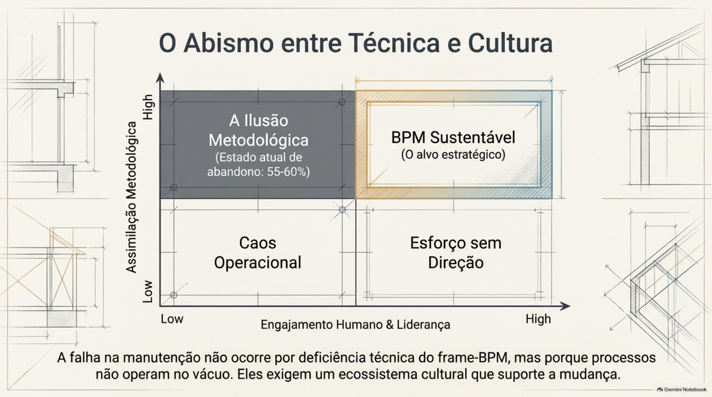

Do que trata o artigo
O estudo analisa a aplicação de um framework simplificado para implementar Gestão de Processos de Negócio em empresas predominantemente instaladas em Goiás. Ele contrapõe a estrutura funcional à gestão ponta a ponta, descreve um ciclo de cinco fases e examina o valor percebido pelas organizações participantes.
A leitura também evidencia uma tensão central: o método foi bem assimilado, mas a continuidade das ações depende de liderança, envolvimento das equipes e maturidade organizacional.
Objetivos do artigo
Objetivo principal
Analisar a aplicação e a assimilação de um framework para implementar BPM em pequenas e médias empresas, observando a efetividade percebida das ações de transformação.
Objetivos secundários
- Distinguir a lógica funcional da organização orientada por processos.
- Apresentar as cinco fases do ciclo de implementação do frame-BPM.
- Avaliar assimilação e satisfação a partir de fatores críticos de sucesso.
- Identificar ganhos percebidos, barreiras e limites de continuidade nas PMEs.
Da lógica funcional à visão por processos
A transformação começa quando a empresa deixa de enxergar apenas departamentos e passa a acompanhar o valor de ponta a ponta.

A especialização funcional pode fragmentar o trabalho e criar competição interna.
No modelo funcional, cada área tende a otimizar seus próprios resultados. A gestão por processos desloca o foco para o fluxo completo que atravessa diferentes funções até entregar um produto ou serviço.
Uma área eficiente não garante um processo eficiente quando o valor se perde nas passagens entre departamentos.
Tempo, custo, capacidade e qualidade passam a ser observados no processo completo.
A abordagem interfuncional permite comparar desempenho, identificar gargalos e atribuir responsabilidades sem limitar a análise ao organograma.
O cliente experimenta o resultado do fluxo inteiro, não a eficiência isolada de cada setor.
Sistemas apoiam a mudança quando conectam informações e decisões ao longo do fluxo de valor.
O estudo situa tecnologia, competências e aprendizagem organizacional como recursos para assimilar mudanças. Implementar uma ferramenta sem rever o trabalho preserva a fragmentação existente.
Digitalizar um processo fragmentado pode apenas acelerar suas falhas.
O ciclo de implementação do frame-BPM
O método organiza a transformação em cinco fases encadeadas, do entendimento do negócio à execução das mudanças.
O motor da transformação: um ciclo de 5 fases
Alinhamento estratégico e definição do “Ganho Central”.
Mapeamento da realidade atual (notação BPMN).
Identificação de gargalos, riscos e desconexões de valor.
Redesenho focado no estado futuro desejado e projeção de cenários.
Execução do plano de ação e acompanhamento tático.
A primeira fase alinha o projeto a um problema estratégico concreto.
O entendimento do negócio reúne informações estratégicas, promove alinhamento, organiza o projeto e prepara as pessoas. Esse norte evita mapear processos sem uma finalidade reconhecível.
Sem um ganho central claro, o desenho do processo corre o risco de se tornar documentação sem decisão.
A modelagem registra como o trabalho realmente acontece, incluindo suas interfaces e desvios.
A notação de processos ajuda a expor etapas, papéis, informações e dependências. O mapa atual cria uma base compartilhada para discutir problemas antes de propor soluções.
Melhorar exige primeiro enxergar o trabalho real, não apenas o procedimento imaginado.
Gargalos, riscos, desperdícios e desconexões orientam o desenho futuro.
Na análise são examinados os pontos críticos do fluxo. O projeto TO-BE transforma os achados em um processo futuro e a fase de transformação converte as propostas em planos acompanháveis.
Um processo futuro só é melhoria quando responde aos problemas demonstrados no processo atual.
A aplicação em empresas de Goiás
A pesquisa reuniu relatos de experiência e documentos de organizações que aplicaram ou aprenderam o método.

83% das organizações participantes eram micro, pequenas ou médias empresas.
A amostra concentrou empresas de serviços e varejo e 86,7% estavam na região metropolitana de Goiânia. Esse perfil aproxima o método das restrições práticas das organizações menores.
A aderência local fortalece a utilidade prática do estudo, mas recomenda cautela ao generalizar seus resultados para outros contextos.
64% das intervenções ocorreram por consultoria externa; as demais, por treinamento de equipes.
As duas modalidades permitiram contato com o frame-BPM, mas a forma de apoio influencia a percepção sobre entregas, acompanhamento e capacidade de aplicação posterior.
Aprender um método e incorporá-lo à rotina são resultados diferentes.
A avaliação utilizou respostas autodeclaradas e análise documental.
Os resultados descrevem assimilação, satisfação e valor percebido. Eles são relevantes para avaliar aceitação e uso, mas não equivalem a uma medição experimental independente do desempenho das empresas.
Percepção positiva é evidência de aceitação; não deve ser confundida com prova causal de ganho econômico.
Valor percebido e ganhos relatados
A simplicidade favoreceu a assimilação do método e a identificação de melhorias concretas.
Mais de 84% dos respondentes relataram percepção de valor na apropriação do frame-BPM.
O artigo atribui parte dessa aceitação à simplicidade e à agilidade do método diante da complexidade comum em modelos corporativos mais extensos.
Para uma PME, um método aplicável pode ser mais valioso do que um modelo sofisticado difícil de sustentar.
O índice de satisfação parcial ou completa superou 94% entre empresas apoiadas por consultoria.
Os relatos destacaram entregas como desenhos de processos, indicadores e planos de ação. A avaliação, contudo, registra satisfação com a experiência e seus produtos.
Satisfação mostra que a solução fez sentido para quem a utilizou; continuidade mostra se ela se tornou capacidade organizacional.
Os ganhos mais citados envolveram padronização, melhoria da qualidade, uso de indicadores e redução de desperdícios.
Essas respostas apontam os efeitos operacionais percebidos após a aplicação. Também apareceram controle da execução, redução de prazos, produtividade e maior clareza sobre papéis.
A transformação ganha credibilidade quando o desenho se traduz em padrões, medidas e decisões no cotidiano.
O desafio de sustentar a transformação
O principal limite não aparece na compreensão do método, mas na permanência das ações ao longo do tempo.

Uma única aplicação não foi suficiente para muitas empresas replicarem melhorias em outros processos.
O contraste entre aceitação elevada e baixa persistência mostra que a introdução técnica precisa ser acompanhada por governança, repetição e aprendizagem continuada.
Um projeto bem recebido pode desaparecer se não alterar a forma como a empresa decide e acompanha o trabalho.
A falta de envolvimento da liderança foi a barreira mais citada, seguida por baixa participação operacional.
Sem patrocínio dos sócios e gestores, as ações perdem prioridade. Sem quem executa o processo, o redesenho deixa de incorporar o conhecimento cotidiano e encontra resistência na prática.
Transformação imposta de cima falha na operação; transformação sem liderança perde espaço para a urgência diária.
Limitações de gestão e troca frequente de pessoas enfraquecem o conhecimento acumulado.
O artigo aponta que condições típicas das PMEs podem facilitar decisões rápidas, mas também dificultar a institucionalização de indicadores, responsabilidades e rotinas de melhoria.
Sustentar BPM exige transformar conhecimento de projeto em memória da organização.
A síntese: técnica e cultura precisam avançar juntas
A figura reúne a principal reflexão extraída dos resultados: conhecer o método não basta. O BPM sustentável aparece quando assimilação técnica encontra liderança e engajamento humano.
